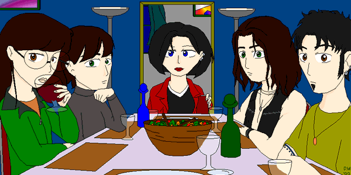

"The Last Stupor"

by Diane Long and Jon Kilner
Chapter One
"Hey, Daria, can you see if there is any Parmesan cheese in the fridge?" Jane asked as she dug under the kitchen counter looking for the large stock pot.
Daria set aside the dishes for the table, pulled open the refrigerator door and looked inside briefly. "Um, Jane? There's nothing in your fridge . . . ever."
"Oh, right." Jane looked up with a smirk. "I guess we'll just have to go without."
Trent opened the Chef Boyardee "Pasta Party for Five" kit and tipped the contents onto the counter. A package of noodles tumbled out with a bag of sauce and a third item. Trent lifted the rectangular packet and peered closely at the label. "Cool. It comes with Parmesan cheese, Janey."
Daria looked at the kit dubiously. Even her mom made fresher dinners, and that wasn't saying much. "Yeah, 'cool'. Is it too late to order a pizza? My treat?"
Trent smiled and shook his head. "Nah, Daria. Janey and me always cook dinner on Sunday. It's a tradition."
"Of course you do," said Daria tiredly as she gathered up the plates and started for the dining room. "Hell, why go to all the trouble of boiling pasta and opening up a jar of sauce on your own when they put out these handy kits?"
"Exactly, Daria," Trent agreed, misreading her tone.
Daria rolled her eyes as she reached across the table to set out the last place setting. By the time she returned to the kitchen, Jane had found the pot and was filling it at the sink. "So, will we be needing wine glasses to accompany this gourmet meal?" Daria asked.
Jane smirked, looking over her shoulder. "Sounds good to me, though Snapple might be more appropriate." She hadn't missed any of Daria's sarcasm tonight. She didn't mind though, it was par for the course. Besides, she was well aware that these dinner kits were mediocre at best and didn't really cut down on time and effort. The packages were just so well designed. Sending a visual artist to do the grocery shopping was a dangerous thing. She just couldn't help herself.
"Yeah," said Trent, regretfully. "It's a shame that we don't have any. That would be perfect."
Now Jane rolled her eyes. Then she turned to Daria and said, "Daria, the wine is down by my mom's kiln. Want to go pick one out? It'll help you choke down the food."
"Oh, of course," said Daria, turning for the stairs. "At last, attending all those wine tastings will finally pay off. Is it red or white with Chef-Boyardee?" She paused at the basement door, giving Jane a chance to send out a snappy retort if she wanted.
Before Jane could speak, Trent approached Daria with a small smile tugging up the corners of his mouth. "Don't worry, Daria. I'll help you choose a bottle."
Daria's eyes widened, an expression that Jane didn't miss. "Ummmmm." She saw Jane's knowing smile and blushed furiously. She was stuck between a rock and a hard place. She could either go downstairs with Trent and surely embarrass herself in front of him, or she could stay upstairs for a good dose of verbal abuse from her best friend. She couldn't win.
Jane saw Daria's red hesitation and was just opening her mouth to make it worse when the sound of slamming car doors caught her attention
"Mr. MORENO! This is NOT my HOUSE!" shouted a very familiar voice, causing the three to wince reflexively.
Jane looked towards the front door. "What the hell do you suppose that is all about?"
"I'm not sure," said Daria as she watched Trent saunter towards the door. "But I don't think we should open the door."
"What was that, Daria?" asked Trent as he twisted the handle.
"Wait!" Daria called, but it was too late. Trent opened the door to reveal a very bug-eyed Mr. DeMartino standing on the mat, looking not at all happy.
"Well," said DeMartino, turning his attention to Trent. "If it isn't Mr. LANE and his sister JANE. To what do I owe the PLEASURE of being subjected to a VISIT to your home?"
Trent looked puzzled, his eyebrows climbing into his hair. "Um, I don't know. You came here."
"ONLY because this sausage link in a VEST brought me here. My car BROKE down on the highway. I THOUGHT he was going to take me to MY home."
"Hey, Jess," said Trent. "Why'd you bring him here?"
Jesse's blank expression sparked briefly. "It's Sunday dinner, man. I'm hungry."
Jane hurried across the room, wiping her hands on a dishtowel. "You're always hungry, Jesse." She turned to DeMartino. "Sorry about this. Would you like to stay for dinner, Mr. DeMartino?"
"Yeah," said Daria, walking over to join them. "I can give you a ride home afterwards."
"Ah, Miss MORGENDORFFER." DeMartino's expression became a bit less hostile. "It's a pleasure to find a BEACON of reason here among the LANES. In THAT case, I would be PLEASED to stay for dinner."
Mr. DeMartino walked in, missing the not-so-subtle glares aimed his way by Trent and Jane. Daria noticed them, however. "Ummm, maybe it would be better if I just took him home right now."
"No way, Daria," said Trent. "You can't miss pasta night."
"Oh, right," said Daria. "Pasta night. Nothing says home cooking like tomato sauce in a boil-in-bag, unless of course the kit includes Parmesan cheese at no extra charge."
"We have cheese?" asked Jesse. "Cool."
"Yeah, Jesse, go sit down and you'll get some in a second," Jane said as the egg timer chimed. "And grab the garlic bread on your way in."
Daria led Mr. DeMartino in to the dining room and put down an extra place setting for him. "Have a seat, Mr. DeMartino. Hope you like Spagettios."
"WHAT?"
"Just kidding. Well sort of kidding." Daria sat down across from him.
Mr. DeMartino sniffed the air and suddenly looked excited. "Miss Morgendorffer, do I smell Chef Boyardee's "Pasta Party for five?" He rubbed his hands together. "That's my favorite. A good grade is going to come out of this for Ms. Lane."
Daria did a double take. "Really? How do you feel about Lean Cuisine lasagna?"
"I failed the last student who fed me that GARBAGE. Why?"
Daria effortlessly spun her potential bribe into sabotage. "My sister Quinn wanted to make you some. Too bad."
Jane entered the dining room bearing five plates balanced all along her arms, waitress style. "Yo, I'm Dolores. Here's yer grub. Remember to tip big." She set down the plates and took a seat by Daria.
Trent followed her in with an open bottle of wine. "Hey Janey, this smells like grape juice."
"WELL, son, considering that's what it's MADE from, that should be no SURPRISE!" DeMartino watched Trent with thinly veiled disgust.
"Um, OK." Trent glanced at DeMartino, looking a little hostile himself at this point.
Daria winced and decided to change the subject. "So, Mr. DeMartino, what was it like to have Trent and Jesse as students?"
DeMartino paused, a fork full of pasta halfway to his mouth. His eyes bulged as a vein throbbed above his left eyebrow. "THAT, Ms. Morgendorffer, is an EXPERIENCE that I'm not CERTAIN can be CAPTURED by mere WORDS!" He slammed down his fork, sending a splash of sauce onto the table. "In FACT, I'm still taking MEDICATION to keep me from RELIVING those days in my NIGHTMARES."
"Hey, man," said Trent. "We weren't that bad. You just couldn't handle having artists in your classroom." His usually calm voice had taken on quite an edge.
Daria glanced at her teacher. "Okay, then. Maybe it's time for me to take you home now, Mr. DeMartino."
"ARTISTS!" DeMartino raged, taking no notice of Daria. "ALL the LANES are ARTISTS and every SINGLE ONE of them has been a THORN in my SIDE!"
Jane pushed back her chair, putting a few more inches between herself and DeMartino. Her expression showed her concern, but she wisely stayed silent.
"PENNY LANE was an ARTIST and she spent most of her time weaving FRIENDSHIP BRACELETS. TRENT LANE was an ARTIST and he spent most his time writing pathetic LYRICS!" He turned his bulging eyes to Jane.
"Uh, oh," Jane mumbled, edging toward Daria. "I don't like where this is going."
DeMartino focused on her motion and snapped forward, like a cobra attacking a wounded bird. He caught Jane around the neck and pulled her against his chest. "And NOW we have JANE LANE. Oh, she's another ARTIST all right. In FACT, she spends ALL her time filling her history notebook with mocking SKETCHES of the FACULTY."
Trent bolted upright, his eyes on DeMartino. Daria had never seen that look in his eyes before. It scared her. "Hey, man," Trent said, pointing to his sister. "I think you'd better let her go," he said in an aggressive tone.
DeMartino took no notice, but continued his tirade. "In FACT, I remember a particular sketch that she drew on Ms. MORGENDORFFER'S first day of class." Jane winced at this, remembering the drawing well. "It was a most UNFLATTERING rendering of me and I didn't get the OPPORTUNITY to show her my APPRECIATION. But I think now is the PERFECT TIME."1
With his free hand, DeMartino grabbed the sharp, serrated, knife from the garlic bread and sliced the air in front of Jane's face. Jane tried to pull away, a small squeak of terror escaping her lips, undoing Trent's control. He lunged across the table and grabbed DeMartino's hand, pulling the knife away from Jane, his anger making him strong. Jane took advantage of the distraction and squirmed free, leaving Trent face to face with DeMartino. They wrestled for the knife.
"Trent," shouted Daria, leaping out of the fray. "Be careful. That man was a Marine."
Trent didn't appear to hear her. His face contorted as he bent DeMartino's arm back at a painful angle. DeMartino lost his grip on the knife and Trent grabbed it before it could hit the floor. DeMartino lurched towards Trent, intent on regaining the blade. Trent twisted at the waist, trying to keep the knife away. DeMartino grabbed Trent's wrists and pulled them closer, trying to pry the knife out of his hands. Desperate and lost in the moment, Trent lunged into DeMartino's grasp and savagely thrust the knife deep into DeMartino's chest. DeMartino staggered and fell back onto the table. He grasped at the wound in his chest feebly for a moment then went eerily still. Abruptly freed from the struggle, Trent stood still for a long moment. Then as if his legs would no longer hold him he dropped into a seated position on the floor and stared ahead with glazed eyes.
The momentary pause of shock was broken by Daria. "Is he dead?" she asked frantically.
She looked to her friends. Trent was now staring down at his bloody hands as if he didn't believe they belonged to him. Jane was crouched on the floor panting like a small rabbit. Jesse was still eating.
"I don't know, Daria," whispered Trent. "I think he might be. Maybe you should check his pulse."
"No way," said Daria, shaking her head. "I'm not leaving behind any telltale fibers on his body."
Jane looked up. "For crying out loud, Daria. It's not like we did anything wrong. That maniac was trying to kill me!"
"We can't prove that," Daria retorted. "The police won't believe that and I'm not touching him."
Jane jumped to her feet. "Okay, then I'll do it." She reached out to DeMartino's neck, feeling for a pulse. "Nothing." She looked from Trent to Daria. "Now what?"
"I'm going to jail," said Trent, still looking down at his hands.
"No way!" said Jane. "You saved my life. We just won't tell anybody about this."
Daria glanced at Jane, her eyebrows knit. "Don't you think someone is going to notice when he doesn't show up for class on Monday?"
"Not our problem. It's not like anyone knew he was coming here."
"Well, what are you going to do?" Daria asked, a sarcastic edge in her voice. "Bury him in the back yard?"
Jane's eyes lit up.
"Oh, no," said Daria. "We are not burying him on your property. And before you think of it, we're not burying him on my property either. It's too obvious."
"Then where?" asked Trent, hope returning to his eyes. "Where can we put it?"
"Him!" shouted Daria, wheeling around, her pleated skirt flaring. "He's a him, not an it!"
Trent's face fell and he looked down at DeMartino. "Him, then," Trent murmured.
"Geez, Daria," Jane snarled, defending her brother. "Give it a break. Trent saved my life. If you want to be helpful, think of a place we can stick the body."
"Hey," said Jesse, looking up from his nearly empty plate. "Is there any more corn? I'm still hungry."
"No, Jesse," said Daria, shaking her head. "We had corn last week."
Jane arched a knowing eyebrow at Daria. "Corn," she said. "That gives me an idea."
"No way," said Daria. "We can't take him there."
"Why not?" asked Jane. "What's a cult without a body buried under the corn?"
"He's not in a cult!"
Trent looked up. "Who?"
"Oh, Daria's old boyfriend, Ted Dewitt-Clinton. His family grows corn in their front yard. It's perfect," Jane said with a greedy look in her eyes.
"Oh." Trent glanced at Daria briefly and looked even more subdued. Then he said, "Yeah, that weird place. Nobody would notice there. Hey Jesse, can you help me load this body into the tank?"
Jesse pushed his empty plate away and glanced at Mr. DeMartino's mostly untouched plate of food. It was obvious he was trying to decide. A faint look of disgust crossed his face and he said, "Cool."
Chapter Two
When they returned from their grisly duty, Daria and Jane were sitting at the kitchen table with the open bottle of wine between them. Each had a partially filled glass at her elbow and judging by the bottle, it was not the first for either. Daria was staring down at the floor, her eyes wide. Jane had her chair leaned back. Her head was resting against the wall as if she were sleeping, but her eyes followed Trent's every motion as he entered and closed the door behind them.
"It's done then?" Jane asked.
Trent met her gaze. "Yeah. It's done."
"Good." Jane leaned forward and reached for the bottle. "Come join us. We were just drinking to a crazy man's departure."
Daria stiffened at this. Her brow creased, but she said nothing and that alone was enough to worry Trent. He tentatively moved around her and took a seat at the table. Jesse sat at the back, near the wall. Jane poured out two more glasses in silence, her glance moving to her friend. Daria didn't look up. It was clear that the two had hardly spoken since being left in the house together.
Jesse sipped his wine, then peered into the dining room and looked over the wreckage of dinner. "All that work made me hungry," he said, his expression open and childlike. "Is there any more spaghetti?"
Daria jolted upright and turned to face him. "Right! Of course! Where are my manners?" She rushed into the dining room and snatched up the plate that DeMartino had left untouched. She came back into the kitchen and slammed it down in front of Jesse, causing half the meal to jump ship onto the table. "Here you go! No sense in letting the condemned's last meal go to waste."
"Cool." Jesse gathered up a fork and rescued his floundering meal. Once it was safely back on his plate, he set to with considerable gusto.
"Easy, Daria," said Trent. "It isn't his fault." He looked at her mournfully as if asking her to believe it wasn't his fault either.
"No, it isn't," Daria snapped. "It's all of our faults. We're all accomplices. For crying out loud, we murdered a man."
Trent leaned forward, elbows on his knees and stared broodingly into the depths of his wine glass.
"It wasn't murder." Jane said calmly, looking around at them all, meeting their eyes with a steady gaze. Except for Jesse, who was too busy to look up. "It was self-defense. In case you didn't notice, Daria, that loon was trying to kill me. Besides, it's over. Let's just forget about it and go on with our lives."
"Go on with our lives?" Daria's eyes were wide, incredulous. "How can we? We're murderers."
"No one knows what happened here tonight," said Jane, her voice like ice. "And no one is going to find out. We just go on as if nothing has happened. People disappear every day, Daria. If we just keep our heads, this will all pass."
"Yeah," mumbled Daria. "Like a kidney stone."
"No one is sending my brother to jail," said Jane. "Not for saving my life. We keep silent and see what happens. Agreed?"
Jane turned to Jesse, who paused in his shoveling just long enough to nod his agreement. Trent cast his eyes down from her questioning gaze when she turned his way. "I don't know," he said glancing at Daria. "Maybe I am guilty and . . ."
"Bullshit," Jane countered. "You were defending me, Trent. Just like you always have. You only did what you had to do."
It didn't feel right, but what choice did he have? He didn't want to see Janey and his friends go to jail as accomplices. Without lifting his head, he nodded his acceptance.
"Daria?" Jane prompted
Daria was still unsure, that much was clear by her eyes. She looked from one friend to another, seeking something from each of them. Guilt, perhaps. All she found was pleading gazes, all imploring her to join them. "All right," she said at last. She shook her head as she spoke, as if her body were contradicting the words that her thoughts were producing. "For now, at least, I'll keep quiet. Let's see what happens."
"Nothing will happen," said Jane. "You'll see. He'll be listed as missing and no one will ever suspect the truth."
"I don't know," Daria countered, her voice a whisper. "Someone is bound to figure it out."
But no one did. Monday came like any other, save that a substitute was teaching DeMartino's class. The police found his car by the side of the road where he had left it, but it contained no evidence of foul play. There were mutterings about the disappearance, of course, but no suspicions fell on the foursome. Daria couldn't help but worry as rumors flew and in truth, Jane was nervous too. But Jane calmed as the week progressed and the rumor mongers began to settle on a story. DeMartino's car had broken down, he'd hitched a ride from the wrong person and presto, no more DeMartino. End of story. Even Trent's nerves were soothed as the week drew to a close without further drama. He let Jane's logical arguments silence his conscience. His actions had only been in defense of his kid sister. Now, if only he could get Daria to believe it too, everything would be back to normal.
"Convenient, isn't it?" asked Jane the following Sunday over a glass of wine and a plate of microwaved vegetables and wild rice. "We didn't even need an alibis. No one has the slightest idea that DeMartino was ever here. He simply disappeared."
Daria stirred her food with her fork. She hadn't been eating much all week and was looking pinched. "That still doesn't make it right," she said. "I still feel horrible about what happened."
"Oh c'mon, Daria," said Jane, smiling. "Have you been in the same History class as me this week? It's been so relaxed that some of the students are actually learning things. And not one student even came close to wetting his pants all week. I may actually get to like history with this new guy teaching."
Daria smiled in spite of herself, then quickly stifled the expression. "Well, I have to admit that the class has been significantly less painful this week."
"Hear, hear," said Jane, raising her glass in a toast. "So, who should we do next?"
Daria's brow creased. "Not funny."
"Not meant to be," said Jane. "Think about it, Daria. Through no intention of our own, we removed a thorn from the side of the Lawndale High student body. People are actually learning in DeMartino's former classroom. Face it, we did some good. Just imagine how much good we could do if we chose our targets with care?"
"Forget it. That's not even humorous in a twisted way."
"Whoa," said Trent, pausing over his meal. "Y'know, Daria. Janey has a point."
"Trent . . ."
"No, think about it for a second." Trent's eyes lost their focus as he warmed to the subject. "We killed DeMartino and now things are better than they were before. If someone had done that years ago, imagine how many students would have done well in history."
"Exactly," said Jane. "We've done some good."
"Murder is not good," countered Daria.
"Depends," said Jane. "For instance, if you could go back in time and meet Hitler years before he came to power and you murdered him, imagine all the lives you would save. Would that be wrong?"
"Yes," said Daria. "Or no . . . I don't know. Besides, DeMartino wasn't Hitler."
Jane grinned. "No, he was Typhoid Mary."
"What?"
"Typhoid Mary. She infected thousands because she kept working at her cafeteria after she'd been diagnosed with Typhoid Fever, just one person spreading her infection. Well, that was DeMartino. He was one person spreading his infection of bitterness, resentment and indifference. Who knows how many teenagers have given up on themselves because of him, teenagers who could have become artists, writers or doctors. But instead they turned down a path of self-hatred all due to the derision of one man. But not anymore. We cured the infection."
"That's not a fair argument . . ."
"C'mon, Daria," said Trent. He looked down at her, one eyebrow raised and the corner of his mouth quirked upward. "You can't deny that things are better today than they were a week ago." Still giving her 'the look', he touched her shoulder lightly.
"Well . . . no, I can't. But I still don't think . . ."
The argument continued into the evening, with Jane adamant and Trent supporting her. Daria struggled gamely, but the Lanes produced one example after another of how the world could have been made better by the elimination of a single, well chosen person. And even Daria had to admit that she would personally eliminate someone if she knew they were going to be an evil influence on the world.
"But I wouldn't stab them," she said after her first glass of wine from the night's third bottle.
"Me neither," said Trent, looking down at his open right hand. "That was just too weird."
"Poison, then," said Jane. "We could poison them. That way we'd give them a merciful death."
"Yeah," said Daria. "Poison would be better." Then she shook her head, as if dispelling a disturbing vision. "Hypothetically speaking, of course. I mean, if I was certain the person would be an evil influence."
"Right," said Jane, an evil smile lighting her face. "Hypothetically."
Chapter Three
Daria stood at the kitchen counter, by the sink in the Lane kitchen. Her hands shook as she ripped away the perforated tab from the top of the cardboard box. She took a steadying breath and looked sideways at Trent. He was busy browning a skillet full of ground beef and didn't seem to be paying her any attention. Good. She didn't want him to see how nervous she was. She had agreed to go along with this and didn't want to wimp out. Especially in front of him. She slipped a finger under the tab and ran it along the box's flaps, disconnecting the glue from the cardboard. It came away easily. She opened the box the rest of the way and dumped the contents on the counter. This time the dinner kit was for tacos and included shells, seasonings and a little tin of chopped green chilies; a more complex meal than usual. She bit her lip as she used a can opener to open the chilies. At least Ms. Li would get their best efforts tonight. Her hands shook harder as she mentally named their next victim. She closed her eyes and desperately tried to remember all of the horrible things Ms. Li had done to her students. Things that they had the power to stop.
"Ow!" Daria yelped as the sharp edge of the lid cut into the tender flesh of her hand.
Trent's head whipped around to see what was wrong. His eyes narrowed when he saw the bloody cut. He moved the skillet off the burner and rushed over to her side. "Be careful Daria. You could hurt yourself." He took her hand so he could inspect the cut more closely.
Daria snatched her hand back. "Be careful?" she snapped at him. "Trent, we are about to commit premeditated murder and you're worried about my finger?" She was beginning to regret having ever agreed to go along with this.
Trent calmly took her hand again. "Janey is always cutting herself1 Now here you are too. It must be a girl thing." He squinted at the cut. "It doesn't seem to have any metal in it. It should be OK." With his free hand he reached over and turned on the faucet. He guided her hand under the stream of water and held it there, letting the water rinse out the wound.
Daria met his eyes. "Did you even hear what I just said?" she asked, her voice lowered a notch by the tension she was feeling.
Trent looked thoughtful. "Yeah. I was just thinking. You need to relax."
Daria stiffened. She wasn't sure what was worse, being involved with a group of mad killers or having a stupid crush on the most practiced one of the bunch. "I'm relaxed."
Trent arched an eyebrow at her. "Then how come you're shaking? What's bothering you? You can tell me, Daria." The hand that held hers under the stream of water gave her fingers a friendly squeeze.
Daria glanced down, then looked up at him sideways. "I'm not sure we are doing the right thing here. Who are we to judge? The first time was in self-defense. Tell me how this isn't murder."
"Easy," Trent replied. "Ms. Li has a choice. If we can change her mind about the way she runs the school, then she just gets a nice Mexican dinner. If she doesn't, she gets the wine from the green bottle. She decides, not us."
Daria's gaze slid over the counter and came to rest on two decanters of red wine. Both were made of heavy glass, ornate and deeply etched. One was cobalt blue and the other forest green. One was squarish and the other rounded. One was innocuous and the other deadly. Daria shuddered, thinking back to Jane's cool scheming . . .
Jane's brow wrinkled with concentration as she squeezed clear liquid from an eye dropper into the green decanter. "One...two...threeee...four...and five drops." She screwed the lid back onto a little unmarked phial and slipped it and the dropper into her jacket pocket. Then she lifted the decanter and swirled the wine within. As the refreshing blended with the fatal, Jane sent a sardonic look across the table to Daria. "Shaken, not stirred," she said.
"Funny," Daria replied, her voice as expressionless as her eyes.
Jane maintained her evil smile as she lifted the bottle and sniffed the contents. "Perfect," she declared, her lips curled into a self-satisfied twist. "If you put in too much arsenic you can smell it."
"And you know this because?" Daria wasn't sure she wanted to know.
Jane smirked. "Penny has survived many a third world revolution. She taught me a few tricks."
"A useful sibling survival tip," muttered Daria, trying to cover her nerves with a faint grin. "All of Quinn's survival tips involve hair care products."
Jane smiled at her friend's uneasiness. "Don't worry. You're safe as long as you remember not to drink from this bottle. Remember, the blue bottle is safe. The green bottle is poisoned." Jane turned her gaze to her brother, who was sitting at the table next to Jesse tuning his guitar. "Yo, Trent. Let's review. Which bottle is bad?"
"Green," Trent replied, barely looked up from tuning. "I'm not that oblivious, Janey."
"With poison, it never hurts to check in. How about you, Jesse? Which bottle is bad and which is good?"
Jesse lifted his gaze from whatever vacuum he'd been lost within and looked at Jane. "Ummm, let me see. Green for good and blue for bad, right?"
"Great," said Daria, rolling her eyes. "Why do I get the feeling we're going to do a double-header tonight?"
Jane glanced a raised eyebrow at Daria, then turned back to Jesse. "No, the green bottle is bad, Jesse. The green one."
"Green," Daria repeated, as if speaking to a slow child. "Just like the little Mr. Yuk stickers. When you see the green, that means stay away."
Jesse seemed to think that one over for a moment, then he smiled. "Okay. Mr. Yuk. Green is bad. Cool."
Then Jane turned to Daria. "Ok Daria, let me hear you say it. Which bottle is safe? Daria . . ? Daria..."
...."Daria?" There was an insistent tone to Trent's voice, as if this wasn't the first time he had voiced her name.
Daria focused on him, coming back to the present. "Hmmmm?"
"Are you sure you want to go through with this? You don't look so good."
Daria eased her hand free from his grasp and dried it on a dishtowel. There was no way she could back out now, much as she wanted to. With ease born of long practice, she locked her emotions down and looked at Trent through frosty eyes. "I'm fine as long as they get a chance to change their ways."
"Cool." Trent turned back to the stove. He slid the skillet back onto the burner and continued preparing the taco filling.
The rest of dinner preparation passed without comment. Trent seemed content with the silence and talking was the last thing Daria wanted to do. She was too busy hiding her feelings to communicate clearly. Besides, there was nothing left to say. Tonight's events were inexorably fixed, like it or not. The best she could do was to make sure things were fair.
Daria was placing a platter of finished tacos on the dining room table when the backdoor opened and a chatter of conversation spilled into the kitchen. Their guest of honor had arrived. Daria took a steadying breath as she heard Ms. Li complaining about the ride over. The moment had come. She plastered on a fake smile and started towards the kitchen. Her smile, tenuously held at best, abruptly faded as she picked up on an unexpected male voice, a voice she knew all too well. She rushed into the kitchen and stopped short when she saw Tom helping Trent pour tortilla chips into a bowl. Daria's hands clutched the folds of her skirt in fear. What the hell was he doing here?
Jane saw Daria's stricken expression and chuckled. "Hey Daria. Look who I ran into on the way over to pick up Ms. Li."
Tom glanced up and sent Daria a crooked smile. "Hi Daria. I hope you don't mind me joining you for dinner."
Daria's mouth worked like a gasping fish.
Jane smiled wickedly. "Well, well. Dinner's getting cold. Why don't you and Ms. Li go and have a seat. We'll take care of the rest."
Ms. Li, looking comfortable in jeans and a Ballet Ruse sweatshirt, smiled broadly at Daria. "Oooo Ms. Morgendorffer, this is so exciting! Dinner with my favorite students from Laaaawndale Hiiigh." She grabbed Daria's arm and pulled her into the dining room.
Daria looked back over her shoulder in some distress at a smiling Jane and Tom. They hadn't discussed bringing Tom into this. How much did he know? He would be a witness. He could turn them in. Damn, this was getting complicated. In the dining room, Jesse had finished setting the table and had already seated himself. Daria moved to her own place at the table and directed Ms. Li to her seat on the end. Desperate to regain her center, Daria sat down at the table and tried to listen to Ms. Li's chatter.
"Ms. Morgendorffer, I didn't know you cooked!"
"Call me Daria . . . please."
"OK 'Daria'!" Ms. Li practically wiggled with happiness. It was very clear that she was thrilled to be there.
Daria felt sick. It wasn't supposed to be like this at all. Ms. Li was supposed to make them want to kill her. Daria looked up as Trent came into the dining room and sat down at the head of the table. Jane came in behind him, carrying both decanters of wine. She set them by her plate, across the table from Daria and next to Ms. Li. Tom came in last. He paused to deposit the tortilla chips on the table before sliding in next to Daria.
"There's nothing like a home cooked dinner," said Tom, rubbing his hands together in anticipation.
Daria shot Jane a frantic look, her eyes demanding an explanation.
Jane just winked and replied to Tom, "You'll have to ask Daria if dinner kits count as home made."
Daria just made a sour face, then stared down at her empty plate. This couldn't be happening.
Ms. Li helped herself to three tacos from the platter and smiled. "It is so nice to be entertained by the some of the best and brightest of my school."
Jane stopped mid-bite into her taco and stared at Ms. Li. "Whhammf?" she asked around her mouthful of food.
"Oh, come now Ms. Lane. Don't be modest. You yourself are the top artist in the school district. If you would participate just an eensy bit more, we would make the art departments at the other schools look mediocre." She looked at Jane, a sly look in her eyes. "And if we did that, we could get more funding for our art department."
Jane looked stricken. "I could help the art department at Lawndale get more funding?"
Ms. Li swallowed a mouthful and nodded vigorously. "Yes indeedy! That's why I push you so hard."
"Oh," Jane's features twisted into an expression of indecision. Things weren't quite so clear all of the sudden.
"Yeah, but how do you feel about the music department?" asked Trent from his end of the table.
Ms. Li wiped her mouth with a napkin and looked at Trent with genuine fondness. "Mr. Lane, don't play games with me. You were in my office every day because the marching band didn't suit you whatsoever. Just think: you playing the oboe! No wonder you misbehaved. I'm glad to see you have found a more appropriate setting for your musical talents." She stuck her index finger in the air excitedly, "I hear Mystic Spiral is quite the up and coming band. Your success will bring such honor to your alma mater."
"Whoa. Thanks." Trent looked at Jane. He shifted his eyes to the decanters and then back to Jane, shaking his head in a barely perceptible 'no'. Jane replied with a slight nod, agreeing with his decision. Jesse expressed no opinion, being busy with his third taco.
Tom watched this exchange, then asked lazily, "What about security Ms. Li? Aren't you worried that we might have a school shooting or something?"
Ms. Li's expression hardened. "Yes that is a problem, a really big concern. That's why I have been investing in bomb detecting dogs, surveillance equipment and changes in school policy."
"May I ask what the policy changes are?" asked Jane.
Ms. Li considered. "They are mostly related to dress code. No Trench coats, no combat boots and no multiple piercings."
Jane lifted her hand from the table, her fingertips barely touching the silver hoops in her ears. "Why change the dress code, Ms. Li?"
"Because studies have shown that student's who embrace the counter culture are more likely to become insane murderers."
Jane's other hand slid around the green decanter, her gaze going distant. "Ah, I see."
Daria eyed Jane's movements suspiciously and broke in, "But, Ms. Li, Jane and I fit that description and you don't seem to worry about us. Maybe that line of thinking is a little extreme."
"True," said Ms. Li. "But perhaps you are a ticking time bomb under those clothes. How could I know? By forcing you to change the way you dress, I am perhaps saving you from yourselves. All people who dress alternatively have something to hide. We must bring their secrets into the light."
Jane's nostril's flared. "I think it's time to have a toast. Ms. Li?" She uncorked the green decanter and motioned for Ms. Li to pass her glass down.
Daria reached across the table and grabbed the decanter away from Jane. "Not yet. Let Ms. Li explain why she WOULDN'T CHANGE her security plan. She just wants to keep us safe."
Jane tried to snatch the wine back, but Daria set it down next to her own plate, safely beyond the reach of her eager friend. "Don't be rude, Daria," Jane goaded. "Let's toast our guest."
Ms. Li peered at the decanter. "Excuse me, young people. But is that an alcoholic beverage? If so, I'm afraid that I simply cannot condone it's consumption here tonight. We're not all of legal age."
"Well, it's just wine," Jane said quickly. "We really only brought it to properly toast you as our guest."
"That's a very nice gesture, but I just can't . . ."
"But you're of legal age," said Tom. "You can have a glass. What if the under age among us have only a sip for the toast? Just to do things properly."
Ms. Li paused for a moment of thought. Then her smile returned. "Actually, I wouldn't mind a glass of good wine. And I suppose just a sip wouldn't hurt you young folks, for toasting purposes."
Jane smiled and turned to Daria, gesturing toward the glass that Ms. Li was now holding out. "Well, Daria?"
"Ummmm," Daria stalled. "Ummmm, you haven't told us why I'm one of your favorite students, Ms. Li. I had no idea."
Ms. Li set her empty glass back on the table. "Of course. Daria. You bring glory to Lawndale High with your writing abilities. Your talent has even been featured nationally in VAL magazine." Her brow furrowed a little. "But I seem to remember that several of your most recent book reports have been done on books that should have been on the banned book list."
"Banned book list?" Daria's voice suddenly developed an odd catch.
"Yes, something every school should have. The damned school board took mine away, but don't worry. I am fighting to get it back and I expect to win. I have friends in high places."
"But why?" Daria asked in a whisper.
"Daria, my job is to teach students not only how to think, but what to think. We can't have students thinking just any random thought. No, we must have order and control for our society to work. It is the job of educators to hand feed young people the information they need to survive in our world."
"What about independent thought?" Daria asked, deeply disturbed.
"Nothing but trouble. No, no we can't have that. Order, Ms. Morgendorffer, must be maintained. At all costs."
Daria took a deep breath "What would change your mind?"
"Nothing," answered Ms. Li, her eyes hard. "I am positively correct on this issue."
Daria stared at Ms. Li, trying to decide what to do. Had she given her enough of a chance? Feeling a nudge at her elbow, she looked over at Tom. He pushed the green bottle towards her with a knowing wink. Daria glanced around the table. Jesse was too intent on his meal to notice, but the verdicts of Jane and Trent were clearly written on their faces. Daria looked back to Ms. Li and made her decision. "Then I think it's time for a toast," she said, lifting the green decanter.
Chapter Four
Daria stood at the dining room window, staring out at the street. Trent's car was alone in the driveway. The Tank was gone. Trent and Jesse had left some time ago, gone to take Ms. Li to her final rest beneath the corn. Everything was quiet out there, as if the night had given up on itself and turned it's back on Lawndale.
"But don't you think she realized what was happening, just before the end?"
Daria turned at Jane's question, but it hadn't been directed at her. Jane was sitting at the dining room table, which had been cleared of the dinner dishes. Tom was sitting across from her, his chin resting in his hand as he considered his answer. "Maybe," he said. "But I don't know. I think she just might have been scared."
"No," said Jane. She leaned back and hooked her right arm over the back of her chair. "I think it was something more. First she was choking and that scared her. But as it got worse, I saw a look in her eyes. Especially at the end, when she turned to Daria just before keeling over. I think she realized that she'd been poisoned." Jane's voice turned dark and comically sinister as she raised a single eyebrow. "Betrayed, by the very students that had been so kind in inviting her to dinner."
An uncomfortable silence fell as Tom and Jane looked up at Daria. Daria simply looked back at Jane, enduring her gaze. Then Jane smiled. "What do you think, Daria? She looked right at you. What did you see in her eyes?"
Daria let her gaze drop to the table. What she had seen in Ms. Li's eyes was something she had no desire to share with anyone. And even if she did, the terms for an adequate description simply did not exist. Awareness? Betrayal? Terror? Those words were but shadows of what Daria had seen in that moment when Ms. Li had turned to her. Daria had no doubt in her mind that Ms. Li had known what was happening as she died. The realization of her own impending mortality had been written in her eyes, underlined by her recognition of the one who had brought her to this end.
Daria closed her eyes briefly, trying to erase the disturbing image. There was no answer she could make. Then she raised her eyes again. "I have a question of my own," she said. Daria stepped up and put her hands on the back of the nearest empty chair, her gaze solidly fixed on Jane. "I want to know what possessed you to bring Tom in on this?"
"What do you mean," said Jane, her voice light. "He's the perfect addition to our little group. Our fifth musketeer."
"Don't worry about me," said Tom. "I won't give you guys away. In fact, I can't give you away without giving up myself as well. I'm just as guilty as you are now."
"That's not the point," Daria countered, her eyes still on Jane. "We're supposed to be together on this. You shouldn't have brought Tom in without consulting the rest of us, Jane. We all have to move together, or not at all."
Jane looked to Tom, then back to Daria. Then she spread her hands. "Look. I'm sorry, okay? You're right. I shouldn't have done it. But it's done now and there's no sense in arguing about it. I promise I won't bring anyone else in, not that anyone else in this town deserves to be."
"And I won't either," Tom assured her. "I'm very good at keeping a secret, Daria."
Daria sighed and sat down next to Jane. "Okay. Apology accepted." Might as well give in gracefully. It wasn't like she had a lot of choice in the matter now. It was a good thing she was starting to like Tom, because it appeared like she was stuck with him for the duration.
"Good," said Jane as her smile returned. "Now let's get down to some serious business. Who's next? I vote for Ms. Morris."
Tom nodded and smiled. "How about Ms. Barch? The whole male population of Lawndale High would benefit from her demise."
"Even better," added Jane. "What say we make a clean sweep of the entire fashion club? Just think of how the average IQ of Lawndale High would instantly jump up."
Daria clenched her fists on the table as the two of them laughed at Jane's suggestion. "I don't think we should invite anyone else," she said. Her words silenced the room and earned her two curious stares. "At least not right away. We're moving too fast here. We don't want anyone to get suspicious."
"That's rich coming from you," said Jane. "Wasn't it your voice I heard this evening saying 'I think it's time for a toast.' Jane said the last in a mocking tone, a smile behind her voice.
Daria speared her with a glance, but before her heated words could escape she was interrupted by noises from the kitchen. Trent and Jesse had returned. Unwilling to continue the argument only to have to repeat everything to the guys, Daria just sat back and swallowed her words. The table fell silent, with Tom watching as Daria kept her gaze locked with Jane's.
A moment passed before Trent and Jesse entered the dining room, but they entered with a surprise. Between them, they were carrying five glasses of wine which they distributed around the table. Trent lifted his as he and Jesse seated themselves at the table.
"I want to propose a toast," said Trent. "I want to salute our efforts at making Lawndale a better place and to . . ."
Daria barely listened to the words. She was in no mood to toast their efforts, but she did need a drink. Ignoring Trent's ongoing toast, she lifted the glass to her lips and sipped the wine. Over her glass, she saw Jane look from her own wine to Trent.
"Hey, Trent," Jane interrupted. "Which wine is this, exactly?"
Trent frowned at the interruption. "I don't know," he answered. "Jesse poured it."
"Daria! No!" Jane shouted as she bolted out of her seat. With one hand she knocked the glass from Daria's hand and with the other she delivered Daria a mighty blow on the back. The blow sent Daria's sip of wine flying from her mouth to the floor.
Silence fell over the table as Daria wiped her mouth and turned to Jane. "What the hell was that all about?"
Jane didn't answer. Instead she turned to Jesse, who still had his glass raised for the toast. "Jesse," she began, speaking slowly. "Where did you get this wine?"
"From the green bottle," Jesse replied. "Green is good, right?"
Silence fell again as everyone put their wine down and pushed their glasses away from their places. Daria turned and looked down at her fallen glass and the stains from her spills, like two puddles of blood on the carpet. That had been close. Death itself had been dancing on her tongue, only a swallow away from claiming her forever. She shuddered as she peered into the two murderous pools.
"Aw man, Jesse," said Trent, his voice raised almost to a shout. "The green bottle is poisoned! How many time do we have to tell you? For crying out loud, you nearly killed Daria!"
"You nearly killed us all," muttered Tom, his voice low.
"Are you all right, Daria?" Daria looked up to see Trent's eyes wide with concern. "Maybe you should get some water," he continued. "To wash your mouth out with."
"I'm okay, Trent," she assured him. But her words came out shaky. "I'm okay. But I think we need to slow things down here a bit. We're moving too quickly and it's bound to make us sloppy. Look at what just happened."
"I don't know," Jane countered, aiming a sidelong glare at Jesse. "I think we'll be okay as long as we keep the wine away from a certain oblivious party."
"No," said Trent. "I think Daria's right. We need to take some time off and think things through."
"Just for a while," Daria continued for him in an assuring tone, aware of the dubious looks from Jane and Tom. "We've just made two very visible Lawndale citizens disappear in a short time. We need to see how things play out. See if anyone suspects us. Once we are sure we're in the clear, then we can move on." She sent pointed looks to Jane and Tom. "Agreed?"
The two of them traded glances, then nodded their agreement. Daria permitted herself a small sigh of relief and sat back. For the moment, everything was under control.
Chapter Five
Daria walked down the street alone, lost within her thoughts. Nearly three weeks had passed since Ms. Li's disappearance and rumors were abounding at Lawndale High. Some were pretty wild, like the one that had Ms. Li running off to join the already missing Mr. DeMartino in starting a new life together far from Lawndale. But now, after weeks of discussion, most had settled into believing that Ms. Li had finally dropped all pretenses and vanished with a stash of money she'd embezzled from the school over the years. It was simple, it made a certain amount of sense and it was far from the truth. That suited Daria just fine.
"Hey, killer."
Daria quickly looked around, making certain that no one was in earshot. Then she turned and glared back at Tom, who was walking up behind her. "Very funny."
Tom quickened his pace until he was walking beside Daria. "So how's it going with you, Daria?" he asked. "Have you regained control of your conscience yet?"
"Why? Eager to claim another victim?"
"You know me, Daria. I'm always ready for a challenge." Tom smiled, then turned a more serious expression on her. "But really, I think it's time we moved on. We're obviously safe with regard to Ms. Li. So what are we waiting for?"
Daria shook her head. "I just don't think . . ."
"Wait up, dammit," came a familiar voice from behind. Daria looked back to see Jane quick stepping to catch up with them. "I've had a hard enough day without chasing the two of you all over the place."
"Bad day?" Daria asked, her mouth set in a sarcastic slant.
"The worst." Jane jogged the last few steps and fell in beside Tom. "Would you believe that O'Neill gave me a "D" on my last paper? Now I'm back on academic probation and I'll probably have to take Language Arts over again this summer."
"Well," said Tom. "We have been occupied with more important matters, after all. Daria and I were just discussing it when you arrived."
Jane's face lit up. "Oh? And what have you decided, Daria?"
"I haven't."
"C'mon," said Jane, her mouth turned down in disappointment. "It's been three weeks and no one suspects us for DeMartino or Ms. Li. It's time to choose another contestant."
Daria made a shushing motion, nodding at the activity up ahead. The DeWitt-Clintons were out in their front yard, harvesting what was clearly a bountiful corn crop. In fact, they were filling crates with ears of corn and helping two men load the crates into a truck. A sign on the truck's side proclaimed it the property of the Lawndale Food Bank.
Jane smirked at all the activity and put a hand to her mouth. "Hey Ted!" she called out as the trio passed between cornfield and truck. "How's the crop this year?"
Ted looked up from the crate he was packing, a smile lighting his eyes. "Exceptional," he answered. "We're having our best year ever. In fact, we're growing more than we can ever use, so we're giving some to the less fortunate. The new organic fertilizers we're using are making quite a difference."
Jane snorted, barely holding back open laughter. "No doubt about it," she called back. "Natural fertilizers are always the best." Daria grimaced and nudged her with an elbow, but Jane's smile held as they left the DeWitt-Clinton's behind.
"Boy," said Jane as they walked on. "I'd sure like to see O'Neill under that corn."
Tom chuckled at this, but Daria turned a hard expression on Jane. "Now listen here," she said, her voice angry. "That's not what this is about. We started this whole thing to get rid of people who are a problem to everyone, not to kill good people who just happen to tick you off."
"Well," Tom broke in. "If not O'Neill, then who?"
"Nobody," Daria replied. "Not a single person until I'm good and ready. Understand? None of us make a move until everyone is ready and I'm not ready yet."
"Okay, okay," said Tom, lifting his hands in a gesture of compliance. "We don't do anything until you're ready. Right Jane?"
"Sure," said Jane. She offered up a comforting smile. "Take your time, Daria. We can afford to wait."
"Thanks," said Daria. "I appreciate it." Daria allowed herself a brief smile as she resumed her walk home, her two companions matching her stride. Not everyone would be willing to put their plans aside for her, but Jane and Tom were rare people. She was lucky to have such good and patient friends.
But Daria didn't see the sly glance that her friends exchanged behind her back.
Chapter Six
"Old McDonald had a farm, ee-ii-ee-ii-oh!" Jane sang happily as she rummaged through the freezer.
Tom, busy putting pepperoni on a partially assembled Boboli pizza, looked up and winced. "Here we go again." He glanced over at Daria. "Do you know how to make her stop?"
Daria shook her head. "Nope. But then, she only does that when you're around." She turned to Tom and smirked. "Maybe she'll stop if you leave," she deadpanned.
Tom rolled his eyes and sprinkled mozzarella cheese over the pepperoni. "So, how is the garlic bread coming?"
"Almost ready for the toaster oven." Daria finished spreading garlic butter on half a french loaf and turned her attention to the second half. "But seriously Tom, if you find a way to make her stop singing I'll pay you fifty bucks on the spot."
Tom smiled as he opened the oven door and slid the pizza inside. "Only fifty?"
"Lay off Janey's singing you two," Trent reproved mildly. He looked up from his salad preparations long enough to shake a carrot at them. "All music is beautiful if you know how to listen."
Tom arched an eyebrow "This coming from a 22 year old musician who still lives with his parents? Next you'll be telling us about your new career off broadway2."
Daria snickered and added, "Yeah, and with a singing voice like that, Jane will have to earn her pay by being an art dealer or something2. I can see it now: Businesswoman by day, karaoke queen by night."
"I heard that," said Jane as she closed the freezer door and turned, one hand curiously hidden behind her back. Without warning, she flung her hand out and released what was hidden within. "Take this!" she shouted.
"Hey!" Daria ducked under the handful of freezer frost. It hit the wall and splattered, tossing errant flakes into her hair. Intent now on returning the fire, Daria grabbed a handful of newly chopped carrots from Trent's cutting board and flung them back at Jane.
Jane hunkered behind Trent and crowed, "Food fight!" before grabbing a handful of croutons and
throwing them at Daria.
"Hey!" protested Trent, though it wasn't clear if he was complaining about the food fight or about being caught of the middle of it.
Daria tried to dodge, but Jane's second load of croutons hit her square in the face. Most bounced harmlessly to the floor, but an unlucky rebound sent a few of them sliding down the front of Daria's shirt. "Ack!" she cried and proceeded to do a bizarre, twisting dance to persuade the crumbly things to fall on through to the floor.
Daria's look of irritation, combined with her jerky movements, doubled Trent over with uncontrollable laughter. He leaned against the counter, the chef knife held absently in his right hand, and laughed until he started to hiccup uncontrollably. His left hand grasped at his stomach as if he were in pain, but his face betrayed his mirth.
Daria banished the last of her bready tormentors to the floor before turning to Trent, the pink in her cheeks not entirely from exertion. Smirking, she loaded up a butter knife with the remaining garlic butter and bent the tip back like a catapult. Trent's eyes widened as he realized what she was about to do. But before he had time to save himself, she let the butter bomb fly. It landed with a satisfying 'thwack' right between his eyes, which crossed as he contemplated the stinky, sticky mess.
Jane and Tom had used the distraction of Daria's crouton boogie to retreat to a safe distance, but the sight of Trent set them off again into laughter. They draped their arms around each other as they laughed helplessly, teetering back and forth on the backs of their heels.
Almost as one, Trent and Daria turned on the two of them, their outstretched hands curled into claws of attack. Jane shrieked and dodged to the left. Tom darted to the right, but not before showering Trent and Daria with a handful of leftover pepperoni. Before long the fun degenerated into a chaotic mess with food flying everywhere amid shouts and laughter. Taking advantage of an opening, Daria ducked beneath the kitchen table to catch her breath. Three sets of boots scurried by, slipping and sliding in the buttery mess on the floor. She chuckled a little at the sight, watching from relative safety as Trent and Tom ganged up on Jane. Tom held Jane's arms behind her back as Trent smeared a little of his own garlic butter all over Jane's face. Jane squawked and squirmed, much to the delight of her assailants. Ah, brotherly love. Daria weighed the pros and cons of going to her aid. She had just decided not to risk it when the doorbell rang.
The mock battle ended immediately as Daria crawled out and stood up. "Who's that? We're not expecting anybody for dinner." Daria looked to her friends, her eyes narrowing. "Are we?"
Jane wiped the butter from her face with a damp dishtowel. "Relax," she said as she turned to answer the door.
Daria watched her go, a forlorn and sinking feeling of betrayal growing inside her. She looked over at Trent and Tom and could tell from their hooded expressions that she was the only one who hadn't known. The ache in her stomach intensified when she recognized the voice of their guest.
"Jane!" exclaimed Mr. O'Neill's voice from the doorway. "I am so glad you invited me to dinner. It smells super."
Throwing a deadly glare at Trent and Tom, Daria turned and strode into the living room. She walked directly over to Mr. O'Neill and planted herself physically between him and Jane. "Jane," Daria growled. "I dropped the garlic bread on the floor. Why don't Mr. O'Neill and I go to the store and get some more?" With her head turned so Mr. O'Neill couldn't see, Daria scowled at Jane and mouthed the word 'no.'
Jane laughed almost naturally. "Come on, Daria. Mr. O'Neill doesn't care if we have bread or not. Right, Mr. O'Neill?"
Mr. O'Neill laughed with genuine good nature. "Of course not, Jane. Whatever you are having is fine by me. I'm sure it will be wonderful."
"We can't be rude to our guest, Jane," said Daria through clenched teeth. "I really think we should go."
Mr. O'Neill's hands fluttered nervously. "If that's want you want, I'd be happy to go with you, Daria."
Daria felt a faint brush of hope. Maybe she could wreck the car or something while they were out. That should keep him away. The main thing was to get him out of the house. Now. "Great, let's go."
As Daria turned for the door, the oven timer started beeping merrily. She froze, knowing what was to come.
True to Daria's fears, Jane grabbed O'Neill's arm and dragged him toward the dining room. "You guys can't go now," Jane said, smiling. "The pizza's ready. It'll get cold."
"Oh, we couldn't have that," gushed O'Neill. "Don't worry Daria. I'm sure dinner will be fine as is."
Daria followed them, her thoughts numbed by this unexpected turnabout. How was she going to get O'Neill out of here now? This evening was rapidly turning into a hellish nightmare, with Jane in the role of Mephistopheles.
"Hey, man," Trent greeted as he walked into the dining room with the pizza. "Hope you're hungry."
O'Neill paused in the act at sitting down at the table and stared. "Don't I remember you from somewhere? Tony? Terry?"
Trent grinned thinly as he set the pizza down and took off the oven mitts. "It's Trent. I was one of your students."
Mr. O'Neill smiled and sat down. "That's right. 'Trent, rhymes with tent.' That's how I used to remember it. I'm so bad with names."
"Oh." Trent sat down, discomforted by O'Neill's words. It reminded him of the time he had lived in the tent for six months. Not the best days of his life.
Tom walked in carrying the garlic bread. Jesse entered at this heels. "Look who just wandered in," said Tom. "I thought he was going to skip out on us tonight."
O'Neill's look of partial recognition returned upon seeing Jesse, but he was quickly distracted by the bread. "But, I thought Daria said the garlic bread was ruined."
Jane covertly jerked her head in Daria's direction and rolled her eyes at Tom. Thinking quickly on his feet, Tom ad-libbed. "Yeah, it was. Good thing Jesse brought some more with him. Thanks, man."
"Yup," Jesse said vaguely and took his seat, his eyes and attention on the pizza.
As soon as everyone was seated, Jane tapped her fork against her wineglass. "Before we serve," she said. "I would like to propose a toast to our distinguished guest." She unstopped the green bottle and made as to pass it to O'Neill."
"No! Stop!" Daria said too loudly, her distress clear. All eyes were upon her. "Ummm," she said weakly, trying to think of a plausible excuse that wouldn't send them all to jail. "It's, uh, stale. Yes, that wine has been sitting out too long. Try some from the blue bottle."
Jane glared and put the stopper back on.
Oblivious to the rising tempers at the table, Mr. O'Neill laughed gently. "I couldn't do that. Aren't most of you underage? It wouldn't be legal. I think we should stick to water."
Jane fiddled with something in the pocket of her jacket. "Shall I go get you a fresh glass?"
Daria stared at the pocket and remembered what Jane kept in there. "No need," she said quickly. "I filled up the glasses myself just moments ago. Can't get any fresher than that."
"Fine," Jane snapped. "Then let's eat. Trent, pass the pizza around." Jane's gaze fell heavily on Daria, promising her big trouble later.
Before long everyone was eating despite the thick tension at the table. Trent tried to make eye contact with Jane and Daria, but neither would look beyond their own plates. He tried to keep his cool, worried that the girls were on the verge of blowing their cover with tonight's disagreements. Only Jesse and Mr. O'Neill seemed to be enjoying the food.
Jane was chewing mechanically on a bite of pizza and seemed to be thinking. Her fingers drummed on the table, a clear indication of her agitation. A moment passed before she set the rest of the slice back on her plate and turned a dry smile onto her Language Arts teacher.
"So, destroy any youthful creativity this week?" she drawled, almost making it sound like a joke
between old friends.
"Oh, Joan, don't tease," Mr. O'Neill laughed nervously.
"It's JANE," she replied coldly. "J-A-N-E."
"Oh. I-I'm so sorry." Mr. O'Neill stuttered, his fingers shredding his pizza crust into little bits as he talked. "My memory is so horrible . . . it's just that I can't . . . I can't remember names very well."
"That must go along with your inability to recognize faces," Jane continued, her tone relentless. "Did you realize I took your self esteem class six times? No, you never remembered me. That really helped my esteem."
"Oh, oh, oh . . ." Mr. O'Neill clutched his hands together as his eyes began to tear up.
Jane smirked, sensing weakness. "And look at what you did to my brother TRENT. He dropped out of high school because he failed your class. One point, O'Neill. One point and he would have gotten his diploma."
O'Neill buried his face in his hands and began sobbing uncontrollably. "I'm sorry, sorry . . . I just wanted to teach . . . to help . . ."
Unable to stand another second of this, Daria rose quietly to her feet. "This has gone far enough," she said. "I'm walking Mr. O'Neill to the door. He is going home."
Across the table, Jane stood as well. "I don't think that would be a good idea," she menaced, patting the pocket that contained her bottle of poison.
"Why not? Are you planning to can some more corn?"
"Maybe." Jane's smirk twisted into something darker. "If you like our educators so much, maybe you would like to keep them company."
"Jane," Trent said in a quick, but placating tone. "It's rude to fight in front of our guest. Why don't we take this into the kitchen? I'm sure we can work this out."
Jane met his gaze for several long moments, obviously trying to regain her composure. While she stared, her right hand compulsively squeezed the neck of the green decanter. Finally she dropped her hands to her sides and looked away. "Of course," she whispered angrily and stormed into the kitchen.
"Daria? You coming too? Please?" Trent was putting all of his performing skills into sounding calm and soothing. He cocked his head to one side and regarded her with an innocent expression.
"No way," Daria grunted from behind clenched teeth. Her expression told Trent in no uncertain terms that tonight's events had caused her to lose her trust in all of them.
"Let's go work this out with Janey, Daria. Here's your chance to tell her this is wrong. I had no idea you didn't know. I'll help you." Trent got up and started to slowly walk toward her, as one might cautiously approach a cornered animal.
Tom was now approaching from the other side. "Yeah, she shouldn't have done this, Daria. I see that now," he crooned softly.
Daria's eyes widened as she realized what they were up to. Between the two of them, they could
physically remove her if that was what they wanted. It was either run, or leave O'Neill's side and that was something she didn't dare do. So she held her ground, even while Tom and Trent each took a firm hold on her upper arms. She dug her heels in, hoping to make it difficult for them if nothing else.
Trent looked down at a histrionic and oblivious O'Neill, then turned back to Daria. He bent his head by her ear and whispered, "Look, this is all out of control. If we don't fix it, we could go to jail. And I'm over 18. I could get the death penalty."
Daria started a little at that, but her anger held as she hissed back, "Fix it? Exactly how?" Her eyes told him she already had a few unsavory guesses.
Trent shook his head. "Not that way, I promise. Unless we all agree. Can we please just go into the kitchen. This is just too risky. Please?"
Daria nodded and hung her head. They were in too deep. Nothing they could do at this point could take away the repercussions of their acts. It didn't matter what she did anymore.
Trent tugged gently on her arm and she allowed he and Tom to guide her into the kitchen. Jesse
followed them quietly, the sense of trouble penetrating even his cloudy brain.
"Well, did she dial 911 on her way in?" scoffed Jane. She was sitting Indian-style on the kitchen counter, her eyes dark under knitted brows. "Do you really think a plea bargain will save you?" she said with a sneer.
Trent released his hold on Daria's arm and jabbed a finger under Jane's nose. "Shut up, Janey! You didn't tell me Daria didn't know. In fact, you lied about it."
Jane's eyes widened, then narrowed as her anger reasserted itself. "So what? She was taking forever to come around. She was holding us up. I decided to move things along."
Trent puffed out his frustration and ran a hand through his hair. "That's not how it works, little sister. We are all in this together. If WE fall apart then we will definitely get caught." He cast a sad look at Daria, who's despondent gaze was still directed at the floor. "It may already be too late."
Daria looked up and hugged herself tightly. "Trent, it was too late the moment we killed Ms. Li. We chose to do that. We made a PREMEDITATED decision. How can you all stand there and think what we did was right? It was wrong. WRONG, WRONG, WRONG. I understand ethics and morals, and what we've done would never withstand philosophical scrutiny." Daria sighed and looked around at them all. "I think we should turn ourselves in."
"See?" Jane shouted triumphantly. "She doesn't have the guts to change the world." Jane slithered off of the counter and prowled over to Daria, stopping only inches away. "I say we get rid of her."
Trent strove to stay calm as the situation spiraled further out of control. "Listen to yourself. This is your best friend."
A snaky look twined about Jane's features. "Yeah, but you're my brother. I'd do anything to keep you from going to jail. Anything at all." Her hand stole purposefully into her jacket pocket and she pulled out the little phial. "Open up, Daria," she said holding the bottle in plain view.
Trent grabbed Jane's wrist. "I'm not asking you to do this, so don't pretend that I am," he said firmly. He squeezed hard until Jane dropped the bottle. The arsenic rolled under the refrigerator as he flung her hand away.
"Ow! That hurt!" Jane complained, rubbing her wrist.
"Jane?" Daria's lip quivered as Jane turned a venomous gaze in her direction. "I don't want to hurt Trent. I don't want to hurt anyone. I just want to stop. Can't we please stop?" A single tear dangled on the tip of an eyelash, magnified by a lens of her glasses. "What if we aren't really doing good? What if we are on the wrong track?"
Jane's acidic gaze was a prelude to cutting words to come, but the sight of Daria approaching tears stopped her cold. Never before had she seen a drop of moisture come to Daria Morgendorffer's eyes. Confused, Jane hugged herself and turned away. "What makes you think we're on the wrong track?" she asked uncertainly, striving to hold onto her anger even as it slipped away.
Daria nodded toward the refrigerator and the bottle that had escaped beneath. "I never thought you would want to k . . ." Her voice broke and she lifted a balled up fist to her mouth. "I never thought my best friend would try to kill me," she muttered through her hand, a thin trickle of tears escaping through her clenched eyelids.
Jane's resolve crumbled in the face of Daria's misery. She reached out and threw her arms around Daria, her own tears flowing freely. Daria's distress had called her back from the brink of insanity like nothing else could have. "Oh, Daria. I can barely believe it myself. I'm sorry, so sorry," She sobbed into Daria's shoulder. "What have we become?"
"Daria's right," Trent said thickly, wiping away his own tears with the back of his hand. "This is changing us. We have to stop. Agreed?" He looked around at all of them.
Jane and Daria still sharing a heartfelt embrace, sniffed and nodded their agreement. Tom, looking like he could care less one way or the other, shrugged indifferently. Jesse added his ubiquitous, 'cool' and they were all in agreement.
Jane held Daria at arms length and met her gaze squarely. "We just stop, right? No turning ourselves in or anything?" she asked with hope.
Daria took off her glasses and scrubbed away her tears. "Absolutely. I don't want to go to jail either."
"Great. Then we'd better get out there and calm Mr. O'Neill down." Jane turned for the door.
"Wait a minute . . . agh!" Daria suddenly hopped and twisted back and forth. A lone crouton, the last survivor of the food fight, fell out from under her skirt and bounced across the floor. Trent smiled at her sheepish glance and Jane chuckled out loud. That unexpected sound soon set Daria and Trent into open laughter. The others quickly joined in and the remaining tension of the fight drained out through their joyful exertion. By the time they settled down, their spirits were light again.
Smiling and sniffling, they emerged into the dining room and were confronted with the surprising sight of an equally composed Mr. O'Neill standing at the table. He was smiling bravely, his eyes rimmed in red. He snuffled a little and raised a filled wine glass in salute to his hosts. "I owe you an apology," he said. "Everything you told me was completely correct, though it was difficult for me to hear. I'm truly sorry. What do you say we forget the past and start building a positive future."
Looking a little ashamed, the five young people sat back down at their place settings. O'Neill remained standing. "To prove there are no hard feelings," he said, "I've decided to bend my 'not drinking with minors' rule just this once. I took the liberty of filling your glasses while you were . . . errr . . . in the kitchen. Let's have a toast."
Daria, Trent and Jane looked uneasily at their wineglasses and exchanged nervous glances.
O'Neill saw the glances and chuckled. These young people were certainly fussy connoisseurs. "Don't worry," he said, his tone reassuring. "I didn't pour the stale wine."
Everyone at the table laughed, nervously at first, then with feeling. Soon all their glasses were raised high. Everyone looked to Mr. O'Neill, expectantly awaiting his words.
"To the best student's ever," he said, raising his glass a touch higher. "May they never be afraid of the truth, however painful it may be."
"Hear, hear!" they answered him back and clinked their glasses together, each in turn.
Mr. O'Neill lifted his glass to his lips and paused, watching his students, some from the past some from the present, as they took hearty gulps from their glasses. The sight made him smile. They probably needed a good drink after that row in the kitchen. But it was nice to see that whatever disagreement they had earlier, they were all friends again. He beamed at them and was about to partake of his wine when Daria suddenly choked on her own.
For a few seconds it seemed Daria had cleared her mis-swallow, but then she started choking even harder, her face turning red. Trent reached out to her, but the choking took him as well before his hand could fall on her shoulder. Instead it clutched at the table cloth spastically as he gasped for air. Jane and Tom had time to look alarmed before they joined in, their hands going to their throats as their faces turned livid. Even Jesse was choking now, confusion in his eyes.
Mr. O'Neill set his glass down and lifted the wine decanter, waving the open neck under his nose. It certainly didn't smell stale. And besides, 'green was good,' right?
The cacophony of choking strangled off and a chorus of loud thumps drew Mr. O'Neill's attention from the wine. He looked up and saw that his students were no longer sitting with him at the table.
"Oh, my goodness!"
The End